Building a Simple Tesla Coil: Part I
This project involves HIGH VOLTAGES and ELECTRICAL INTERFERENCE that can be DANGEROUS OR DEADLY especially to those with medical devices such as pacemakers. There are also other dangers potentially associated with this project such as respiratory harm from inhaling gases created by the electrical arcs, skin burns from the arcs, or nerve damage. I AM NOT RESPONSIBLE for any damage or consequences of attempting to replicate my experiments. DO NOT ATTEMPT to construct this if you are not a professional. This is for educational purposes only.
Introduction:
Tesla coils are amazing devices that can not only transform relatively low voltages into extremely high voltages, but also do so in a visually stunning way. Aside from the striking bolts of lighting that they can produce, their ability to wirelessly transfer energy is also remarkable.
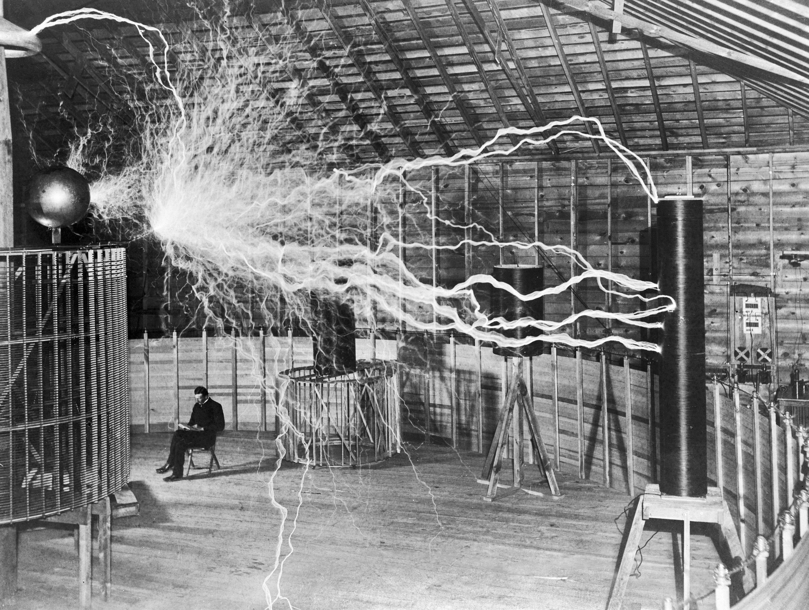
As shown above, the typical Tesla coil consists of a large coil of thin wire with a small coil of thicker wire around the base. At the top of the coil is a wide, smooth metal top load that arcs propagate from.
The first Tesla coil was designed by the man that the device is named after, Nikola Tesla, in 1891. He originally designed them for use in wireless energy transfer, yet this proved to be impractical. Though they do not have any practical use cases, their ability to wirelessly transfer energy, play music, and produce frightening lightning shows are extremely alluring. Further, they serve as an excellent project to learn about electromagnetic fields, inductance, and electronics in general in a very visually stunning way.1
This is the first part in a series of blog posts about designing and optimizing a Tesla coil. Over the course of this series, I will explore the underlying theory and physics of Tesla coils and experiment with the Slayer Exciter design. I will document this journey to produce data, resources, and research to aid others and myself in understanding these amazing devices. To catch up on the latest post in this series add the following RSS link to your favorite RSS reader. Learn more about RSS here or to find a reader, read this article.
If you have any comments, questions, concerns, or would like to make any suggestions about this project, I encourage you to open an issue in the project repository (The Codeberg Docs have more information about issues and how to use them. The project README also has information about contributing). If you have any comments, questions, concerns, or suggestions about this website or blog post, please leave an issue on the repository for this website (There is also information about contributing in the website README). I am sure that I have made a mistake in this post, and though I hope that others can learn from my writings, I do this mainly to better understand topics myself, so please do not hold back any corrections or opinions.
Goal:
The goal for this iteration is to create a functional, proof-of-concept Slayer Exciter Tesla Coil (SETC) that can produce visible arcs. This will primarily be based off of previous designs. Still, I will attempt to gain a basic understanding of the theory behind the coil and identify areas to research.
Everything related to this project which includes 3D files, code, schematics, and more can be found in my Codeberg repository.
Research:
Most Tesla coil designs, namely the spark gap Tesla coil (SGTC), require rather high input voltages, but there is a simpler design, the Slayer Exciter Tesla Coil (SETC), that can run off of a nine volt battery. This is the design that will be constructed in this iteration.
Theory
This will be a quick summary of the theory of the Slayer Exciter and Tesla coils in general. I hope to discuss more details about the physics behind the SETC in future iterations, but this first iteration will be limited to a simple overview.
Transformers
Tesla coils are fundamentally transformers, which means that they feed an alternating current (AC) into a coil of wire called the primary coil, which is in close proximity to another coil called the secondary coil. Given Faraday's law of induction, the changing electromagnetic field produced by the primary induces a current in the secondary. The voltage in the secondary compared to the voltage in the primary is dependent on the ratio of turns from the secondary to the primary and is given by:
$$ \frac{V_s}{V_p} = \frac{N_s}{N_p} $$
Resonance
The SETC, however, is a special type of transformer that operates at the resonant frequency of the secondary coil. This transformer, the resonant transformer, is much more efficient than a normal transformer especially at long distances and without a ferromagnetic core. 2 To practically understand resonance in this circuit, it is often useful to imagine a swing where the maximum height of the swing is the amplitude of the voltage in the secondary. Anyone who has been on a swing at a park knows that when another person repeatedly pushes on them at just the right time, they will swing higher.
In the case of the Tesla coil, however, the "person" doing the pushing is the primary coil inducing a voltage. If this primary is in perfect tune with the resonance of the secondary, the secondary can produce very high voltages very efficiently. There is an excellent video that demonstrates this principle called "Resonance and Tesla Coil Basics".
To make the coil resonate, the SETC uses an LC circuit, which is simply a circuit where there is an inductance, $L$, from the secondary coil and a capacitance, $C$, from the parasitic capacitance between the coil, its soundings, and itself. The resonant frequency of this circuit, $f$ is given by: $$ f = \frac{1}{2 \pi \sqrt{L C}} $$
The oscillations generated by this resonant circuit are used as feedback to drive the circuit that switches power to the primary coil. Thus, the magnetic field created by the primary will induce a current into the secondary exactly at its resonant frequency without the need to manually tune it to the secondary's exact resonant frequency.
Most solid state Tesla coils (SSTCs) use an antenna to receive feedback from the changing field generated by the secondary and feed this to a mosfet driver IC. The SETC, however, accomplishes this by simply attaching the bottom of the secondary to the base of a transistor. How this practically works will be explained in a later section.
Mathematical Model:
Soon, we will see that the resonant frequency of the coil is very important in designing it. Thus, it will be useful to determine the resonant frequency of the coil using only its dimensions.
Inductance $(L)$:
Consequently, this means that we would need to calculate the inductance and parasitic capacitance of the coil. Beginning with the inductance, I initially used Wheeler's formula (shown below) though I am unsure why I used this formula as it only works when the diameter and length are very similar in size (when the length, $l$, is less than $0.4$ times the diameter, $D$) which is not the case for most Tesla coils.3 $$ L = \frac{N^2 r^2}{9r +10l} $$ However, the formula for the inductance of a solenoid produces much more accurate results. This calculates inductance where $N$ is the number of turns of the coil, $\mu_0$ is the magnetic permeability constant of free space, $A$ is the cross-sectional area of the coil, and $l$ is the length, in this case height, of the coil.4
$$ L = \frac{N^2 \mu_0 A}{l} $$
Parasitic Capacitance $(C)$:
The parasitic capacitance of an air core inductor can be determined with Medhurst's formula where capacitance, $C$, is given by $H$, a constant determined by the ratio of length to diameter, times $D$, the diameter of the coil. $$ C = H D $$ The link to the original paper where this is explained can be found in the footnotes, but the table with the values for $H$ is shown below.5
| $\frac{\text{Length}}{\text{Diameter}}$ | $H$ | $\frac{\text{Length}}{\text{Diameter}}$ | $H$ | $\frac{\text{Length}}{\text{Diameter}}$ | $H$ |
|---|---|---|---|---|---|
| 50 | 5.8 | 5.0 | 0.81 | 0.70 | 0.47 |
| 40 | 4.6 | 4.5 | 0.77 | 0.60 | 0.48 |
| 30 | 3.4 | 4.0 | 0.72 | 0.50 | 0.50 |
| 25 | 2.9 | 3.5 | 0.67 | 0.43 | 0.32 |
| 20 | 2.36 | 3.0 | 0.61 | 0.40 | 0.54 |
| 13 | 1.86 | 2.3 | 0.36 | 0.33 | 0.57 |
| 10 | 1.32 | 2.0 | 0.50 | 0.30 | 0.60 |
| 9.0 | 1.22 | 1.3 | 0.47 | 0.25 | 0.64 |
| 8.0 | 1.12 | 1.0 | 0.46 | 0.20 | 0.70 |
| 7.0 | 1.01 | 0.90 | 0.46 | 0.15 | 0.79 |
| 6.0 | 0.92 | 0.80 | 0.46 | 0.10 | 0.96 |
Calculation Script:
I combined both of these equations in a simple numbat script. Though I should have used something more common such as python, the fact that numbat treats physical dimensions and units as types by default is very convenient. I am also very familiar with it since I regularly use the interactive calculator. Aside from the calculations for inductance and capacitance, the script also estimates the number of turns of wire so the only dimensions to provide are the length of the coil, diameter, and the value for $H$ (I could have found a way to have this be automatically inserted but I have yet to do that). These value are simply provided by changing the variables at the top of the calulations.nbt file that can be found in the repository for the project. More information about running the script can can be found in the project's README.
Previous Designs:
Now that the theory of a SETC is understood, we can explore some previous designs that implement these concepts.
-
- This video begins by explaining the main components of the circuit: a power source, transistor, secondary and primary coils, as well as resistor. However, the design lacks an LED across the base and emitter pins of the transistor unlike the others.
- The video also details the physics of the circuit and Lenz's Law.
- To attempt to fix the problem of transistor overheating, multiple transistors are placed in parallel to divide the current.
-
- This video discusses much more of the theory of a slayer exciter and details improvements that can be made to the circuit to improve its longevity.
- The video also demonstrates how to experimentally find the resonant frequency of the secondary coil
-
- Though the final design in this video does not use a traditional SETC circuit, it demonstrates how to construct one, its shortcomings, and how it can be improved.
Design Explanation:
Materials:
The materials required for this iteration are listed below.
- 1 X Thirty-Two AWG Enameled Copper Wire
- 1 X Sixteen AWG Enameled Copper Wire
- 1 X TIP41C Bipolar Junction Transistor
- 4 X 10K Ohm variable resistors
- 1 X 2K Ohm resistor
- 1 X 5K Ohm resistor
- 1 X LED
- 1 X Breadboard
- 2 X Compression springs
- 1 X 1 in diameter tube at least 5 in long
- Assorted jumper wires
- Kapton Tape
Secondary Coil and Transistor:
Undoubtedly, the most important component of any Tesla coils are the coils themselves. Given that the parameters of the secondary determine the resonant frequency of the circuit, I decided to define this before designing anything else.
The main constraint for the resonant freqeuncy of the secondary is our second most important component—the transistor. While some SSTCs use more complex circuitry to receive feedback from the secondary and drive the primary, the SETC uses a single transistor. In the designs I examined this was often a NPN Bipolar Junction Transistor (BJT). Specifically, they used the TIP31C, but I substituted this for the TIP41C, which could handle 100V opposed to the 60V of the TIP31C. This voltage tolerance may be important as when the primary coil shuts off, its electromagnetic field will collapse and will dump a large amount of current onto the transistor.
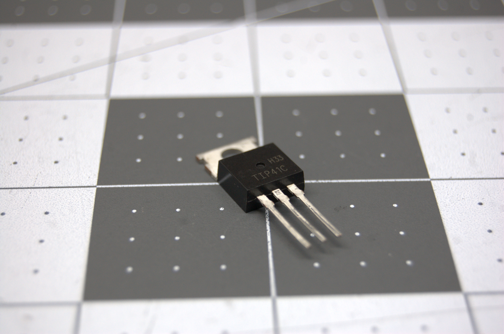
The max frequency of the TIP41C is 3 MHz, so theoretically the max resonant frequency of our coil could be 3 MHz, yet the video from Jim's Cool Stuff explains that when operating under the demanding conditions of the SETC this is often closer to 1 or 2 MHz. Thus, the resonant frequency should be kept in this range; however, I am curious to see if the transistor can handle frequencies within its normal operation range.
To begin designing the coil, I chose a aspect ratio of 1:5 since it was recommended in Kaizer Power Electronics's SSTC design guide.6 To keep the coil small for this first iteration, a diameter of one inch was selected.
Given the aspect ratio, this means that it will be five inches tall. Plugging these values into the previously mentioned script, we see that our resonant frequency is 3.08 MHz which is far above our desired range and the TIP41C's, but this should still theoretically work and can be decreased by increasing the capacitance by adding a topload.
PVC pipes are typically used to wind the secondary; however, I chose to design a 3D printed cylinder as it would be easier to attach it to a drill bit. The link to the spool for the secondary can be found in the models directory in the project repository. The spool is called Secondary.FCStd and the drill bit adapter is called Drill_Bit.FCStd. Refer to the README to learn how to export these files as STLs. Alternatively, open the 3d-models-v0.0.0.zip file located in the v0.0.0 release for .stl files of all models.
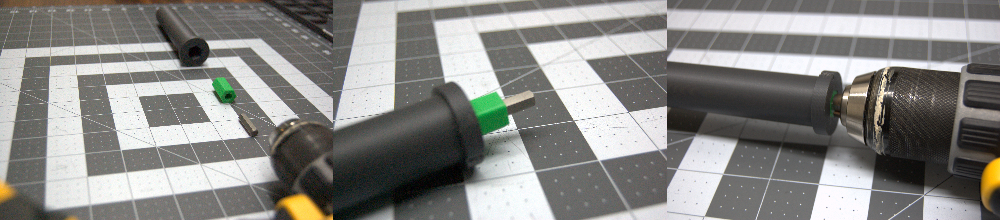
To wind the coil, thirty-two gauge enameled copper wire was used as it was thin enough to allow a high number of turns, which increases the output voltage, but still thick enough to be easily handled.
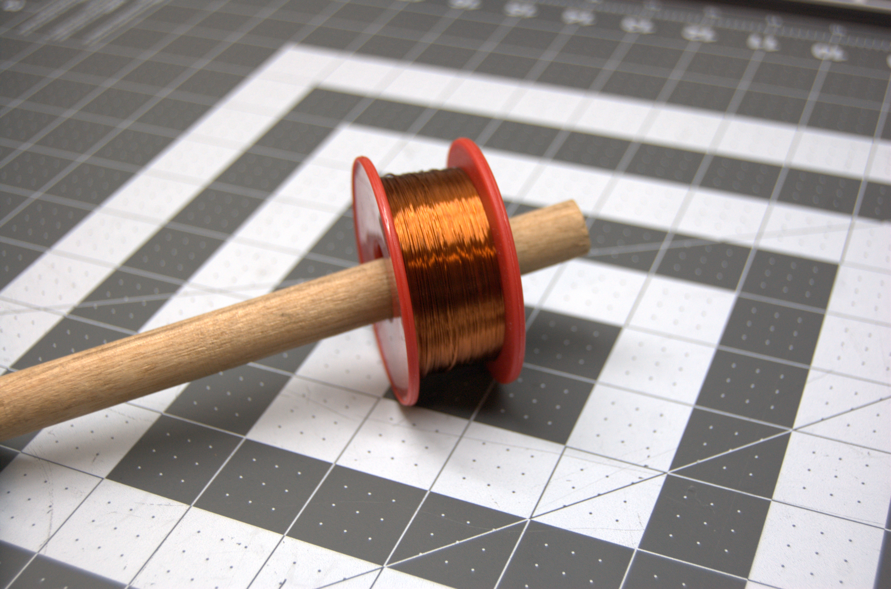
With the 3D printed tube, to begin winding the coil I first inserted the wire into the groove provided in the coil and taped it to the bottom as shown below.
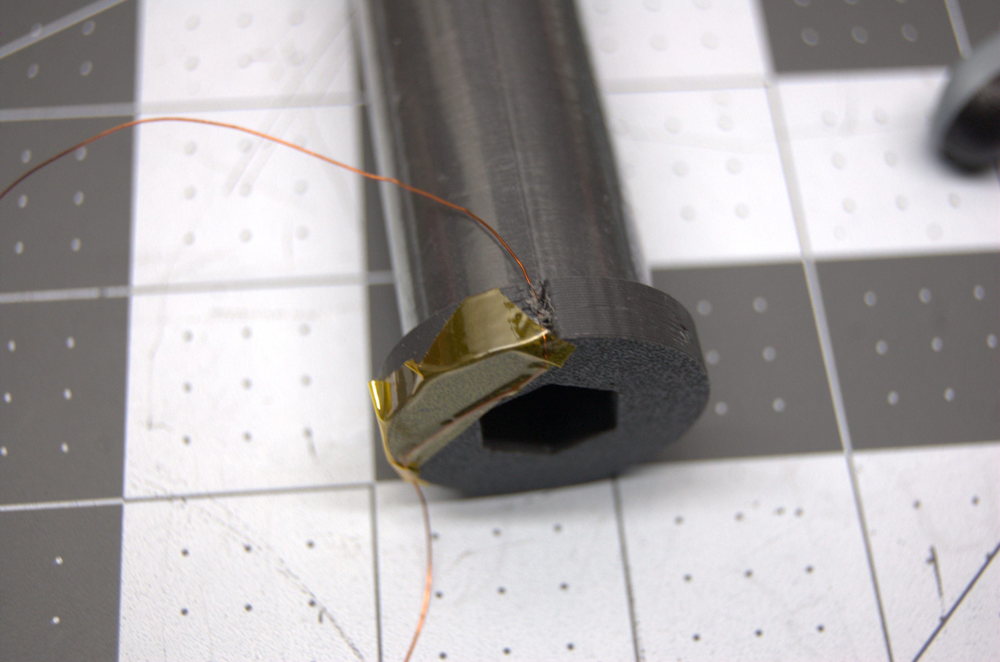
While winding the coil, it is extremely convenient to place the spool of wire in some type of holder, so I placed it on an old soldering stand. I found it easiest to have the spool in between me and the coil, or even on the floor, so that I could guide the wire with one hand while I controlled the drill with the other. Placing a towel below the coil also helps to support it during winding. My coil winding setup is shown below.
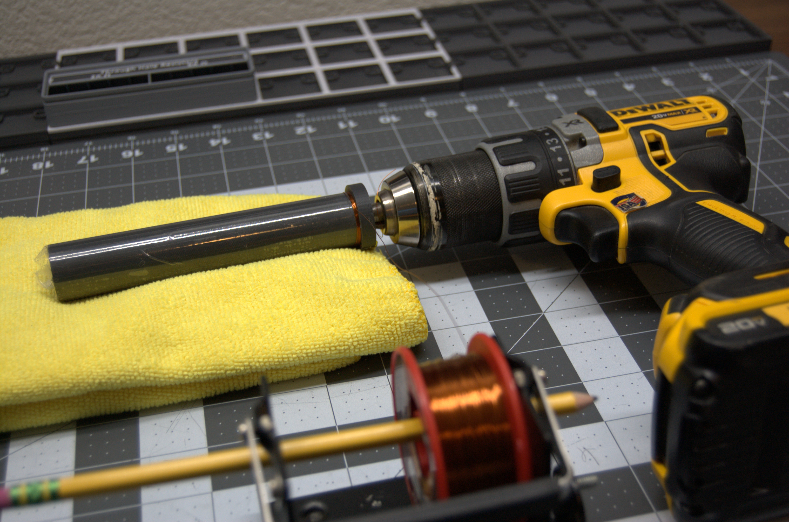
Electronics:
With the primary coil wound, we can turn our attention to the driver circuit shown in this schematic.
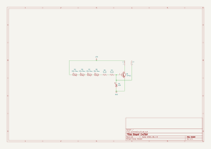
Returning to the transistor (shown as Q1 in the schematic) it is positioned such that the collector is connected to the primary and the emitter to ground. The base of the transistor is connected both to the positive rail of the circuit and to the bottom of the secondary coil. When the circuit is first powered on, current flows through the biasing resistors (shown as R1-R6) to the base of the transistor turning it on. Before continuing it is important to note that the resistor's function is to limit current to the base of the transistor as the base current must be smaller than the collector current shown by the following equation where $\beta$ changes for each transistor.
$$ I_C = \beta I_B \implies I_C > I_B $$
Further, absence of a resistor would cause the transistor to draw too much current and destroy itself. Given that the transistor will be running at very high frequencies it will begin to heat up. To combat this, I clamped it to an old CPU heat sink and taped the thermometer from my multimeter to it so I could monitor its temperature.
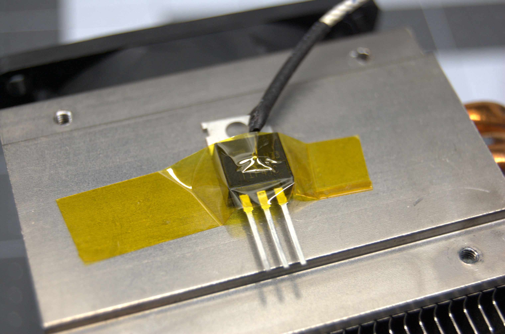
On the topic of protecting the transistor, the LED marked D1 protects the base from the large negative voltage spikes of the secondary. This works when the breakdown voltage of the diode is met and it allows the current from the secondary to conduct to ground instead of overloading the base of the transistor. Theoretically, this should mean that the voltage at the base of the transistor should never exceed the breakdown voltage of the diode used. This voltage should be negative and will pull the base of the transistor down at just the right moment. Why this voltage is negative will be explained in a future iteration.
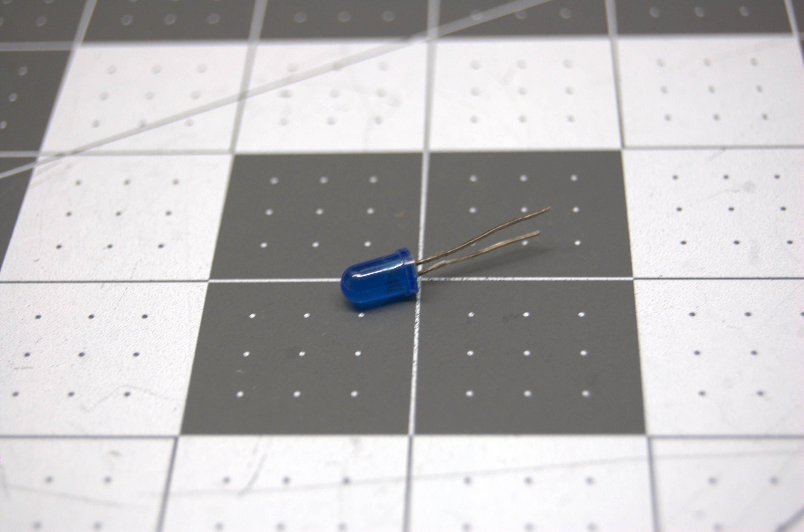
The last component is the primary coil which will simply five turns of 16 AWG enameled copper wound around the base. Given that the wire was rather stiff, it expanded about two or three millimeters after winding giving it some distance from the primary so that there would not be any electrical arcs in between the primary and secondary. The enamel was scraped from the edges of the wire, and I placed an extension spring at the end to connect it to a breadboard jumper wire as shown below.
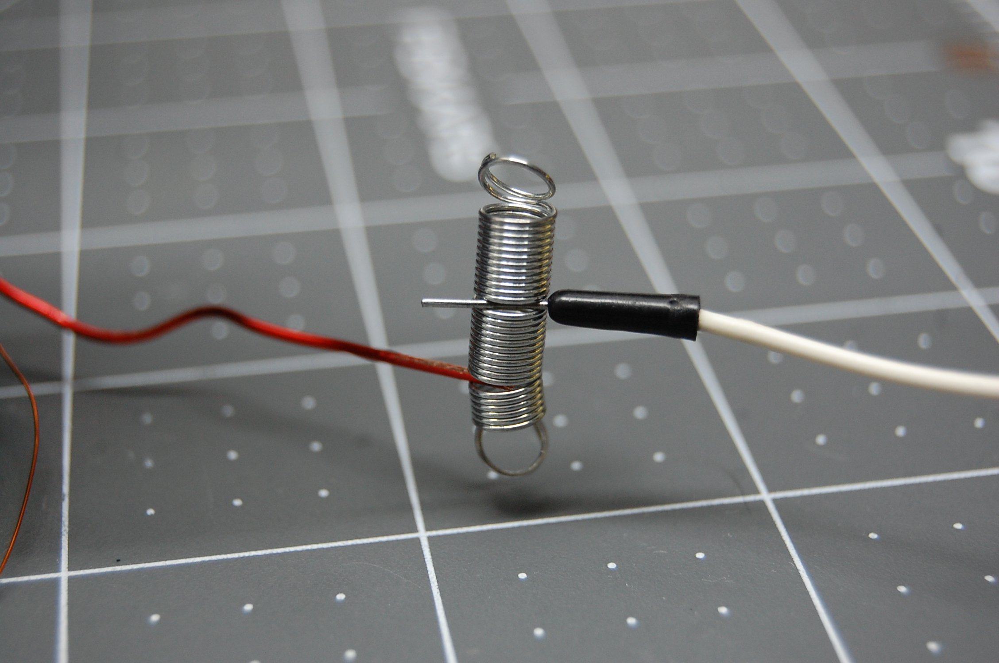
All this was placed on a breadboard as shown below:
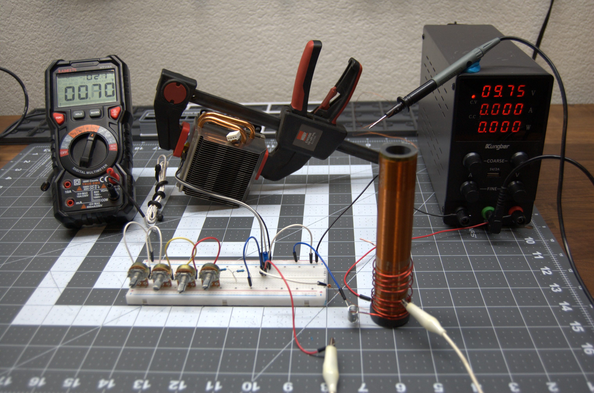
Observations:
After powering on the circuit at 9V, the LED was illuminated and touching a metal object to the spring I attached to the top to keep the wire in place produced small arcs that are shown in the next section.
There were no notable temperature changes observed using the multimeter either. However, as I increased the voltage to 12V the transistor began to heat up and it quickly died once 12V was reached.
Transistor Voltages:
I wanted to test voltages at the base of the transistor to ensure that the diode was doing its job to protect the base from the voltage spikes of the secondary as well as the voltage at the collector to see what voltages the inductive flyback from the primary was producing. However, my oscilloscope seems to be broken, so I will leave these tests to the next iteration.
Coupling Coefficient:
Though I do not have the tools to measure the inductance and determine the coupling coefficient of the coils (the coupling coefficient describes the relationship between the secondary and primary coil), I did lightly experiment with the relationship between the primary and secondary. Notably, I found that even if the number of windings is held constant, spreading them over a greater distance improves the performance of the circuit as well as arc length. Further, decreasing the number of turns, and spreading them over a greater distance would also improve the performance and arc size. This is likely due to the fact that this increases the winding ratio, which as we saw in the theory section would increase the output voltage.
Performance:
Wireless Power
Despite the fact that the readings on my oscilloscope should not be trusted, by simply bringing the probes within one to two inches of the coil, I was able to pick up a 3 MHz sine wave. This is remarkably close to our predicted frequency of 3.08 MHz. This signal would consistently fluctuate from roughly 2.8 MHz when the scope was near the coil to 3 MHz as I brought the probes farther away from the coil. This could simply be variations in readings from my scope, but given that the fluctuations were very consistent over multiple testing periods, it was likely due to my, hand, body, or probe changing the parasitic capacitance and thus resonant frequency of the coil. This was explained in the video by Jim's Cool Stuff.
Arcs:
The images below show the arcs that the coil was able to produce. The probe at the top is my multimeter probe connected to the ground socket on my power supply. In hindsight, I should have created some sort of rig to measure the distance of the arcs to not only record performance, but also estimate the voltages based on the breakdown voltage of air. Still, I estimate that the arcs were roughly a millimeter long, and given that the breakdown voltage of air is roughly 3.0 kV/mm, the coil was likely producing voltages near three kilovolts!7
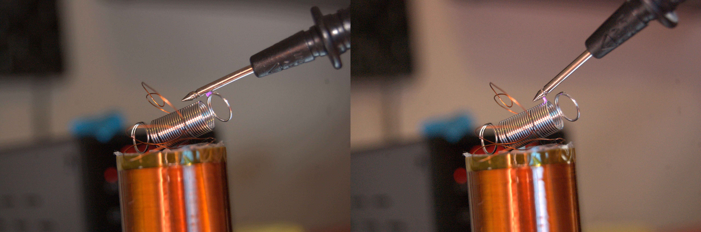
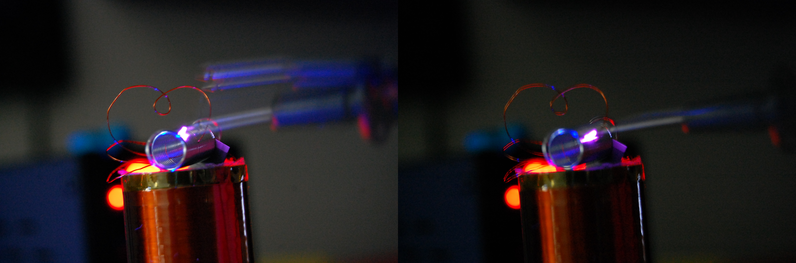
Recommendations for the next Iteration:
In the next iteration the most important task will be to protect the transistor and determine why it is breaking. It is most likely the inductive flyback from primary, but I would also like to verify the diode is protecting the base of the transistor. As explained in the video by Jim's Cool Stuff, a snubber circuit could help to solve this, so I will research this and attempt to implement it. However, as noted by the Hyperspace Pirate video, this is a large amount of strain to place on a single component, and a BJT might not be as suited for the job as a mosfet.
Once the transistor is protected, the power output and arc length of this circuit must be increased. This involves not only the logical assumption to increase input power, which cannot take place until the transistor is properly protected, but also increasing the ability of the circuit to multiply the voltage. Remembering the transformer equation from earlier, this is most easily done by increasing the turn ratio of the coils. In other words, I need to make a larger secondary coil.
On the topic of coils I want to further research and experiment with different coupling coefficients. To accomplish this, I should buy an LCR meter so that I can measure the inductance of the coils to calculate their coupling coefficient.
These measurements may also be useful to create a simulation of the circuit in KiCad so that the circuit can be studied further.
Returning to another one of my original goals, to document my findings and research, I will attempt to start a wiki that details all the theory related to the SETC. For now, this blog will serve as that source; however, I would like to have a centralized source of documentation that I can put in the repository. Currently, I am looking into using mdBook. In any case, everything will still be documented on this website.
Conclusion:
In all, this was a rather successful iteration as not only was my mathematical very accurate, but I achieved the goal of creating a functioning proof of concept that could generate arcs. Further, I was able to learn a great deal about the basic theory behind the Tesla coil, document it, and observe it in my physical model. Overall, I am very excited to begin my next iteration and hopefully begin to measure voltages with a functional oscilloscope, and create larger arcs and higher voltages without frying more transistors.
Thank you very much for taking the time to read this. If you have any comments, questions, concerns, or would like to make any suggestions to this post I encourage you to open an issue (The Codeberg Docs have more information about issues and how to use them) in the project repository. I am sure that I have made a mistake in this post, and though I hope that others can learn from my writings, I do this mainly to better understand topics myself, so please do not hold back any corrections or opinions. If you have enjoyed this, please leaving a star on my website's repository or on the project repository. Have an amazing day!
Footnotes:
https://en.wikipedia.org/wiki/Tesla_coil
https://en.wikipedia.org/wiki/Resonant_inductive_coupling
https://www.allaboutcircuits.com/textbook/reference/chpt-1/inductor-sizing-equation/
https://en.wikipedia.org/wiki/Inductance#Solenoid
https://hamwaves.com/inductance/doc/medhurst.1947.pdf
https://kaizerpowerelectronics.dk/tesla-coils/drsstc-design-guide/secondary-coil/
https://en.wikipedia.org/wiki/Breakdown_voltage